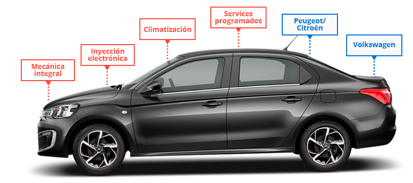

ADNcar, la empresa líder en mecánica automotriz!
ADNcar es una empresa especializada en servicios de mecánica automotriz. Nuestra empresa cuenta con un equipo de técnicos altamente capacitados y con amplia experiencia en el mantenimiento y reparación de vehículos de todo tipo.
Nuestros servicios incluyen:
- Service: Nos encargamos de realizar todas las revisiones y mantenimientos necesarios para asegurar el buen funcionamiento de su vehículo. Esto incluye cambios de aceite, filtros, líquidos, frenos y neumáticos.
- Reparación: En caso de que su vehículo necesite reparaciones, nuestro equipo de técnicos está capacitado para diagnosticar y reparar todo tipo de fallas mecánicas.
- Diagnóstico avanzado: Contamos con tecnología de última generación para realizar diagnósticos avanzados en su vehículo. Esto nos permite detectar y resolver problemas de manera rápida y efectiva.
- Servicio de emergencia: Ofrecemos servicio de emergencia las 24 horas del día, los 7 días de la semana, para que pueda contar con nosotros en caso de cualquier imprevisto.


Nuestro taller mecánico cuenta con un equipo de expertos altamente capacitados que tienen años de experiencia en el sector automotriz.
- Mario Aguilar: Encargado del taller y mecánico automotriz experto con más de 20 años de experiencia en el campo.
- Fernando Gómez: Mecánica automotriz con 10 años de experiencia en sistemas de suspensión y dirección.
- Luis Ramírez: Mecánico especialista en neumáticos y frenos con más de 5 años de experiencia en el campo.
- Paula González: Experto en diagnóstico de motores y sistemas eléctricos con más de 8 años de experiencia en el sector.